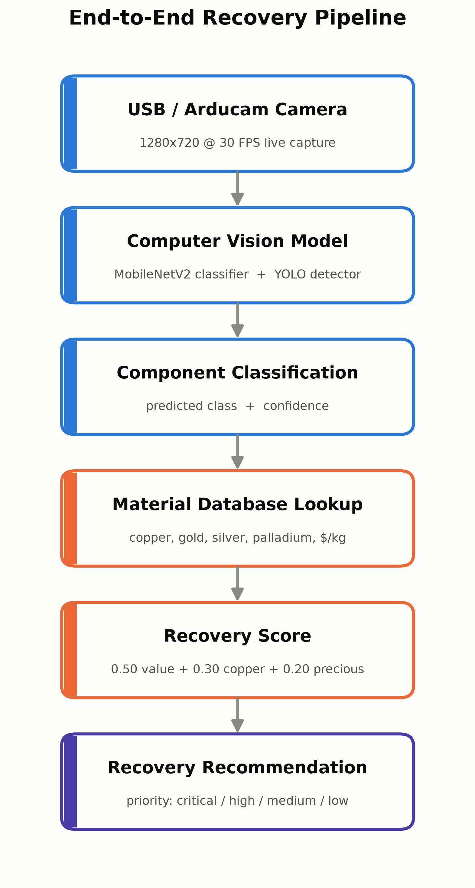
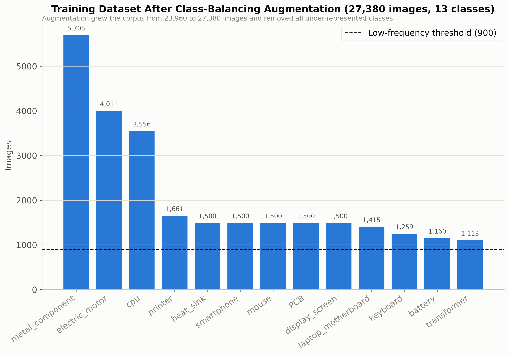
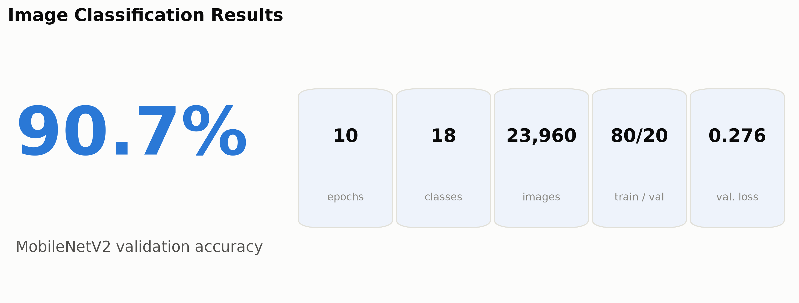
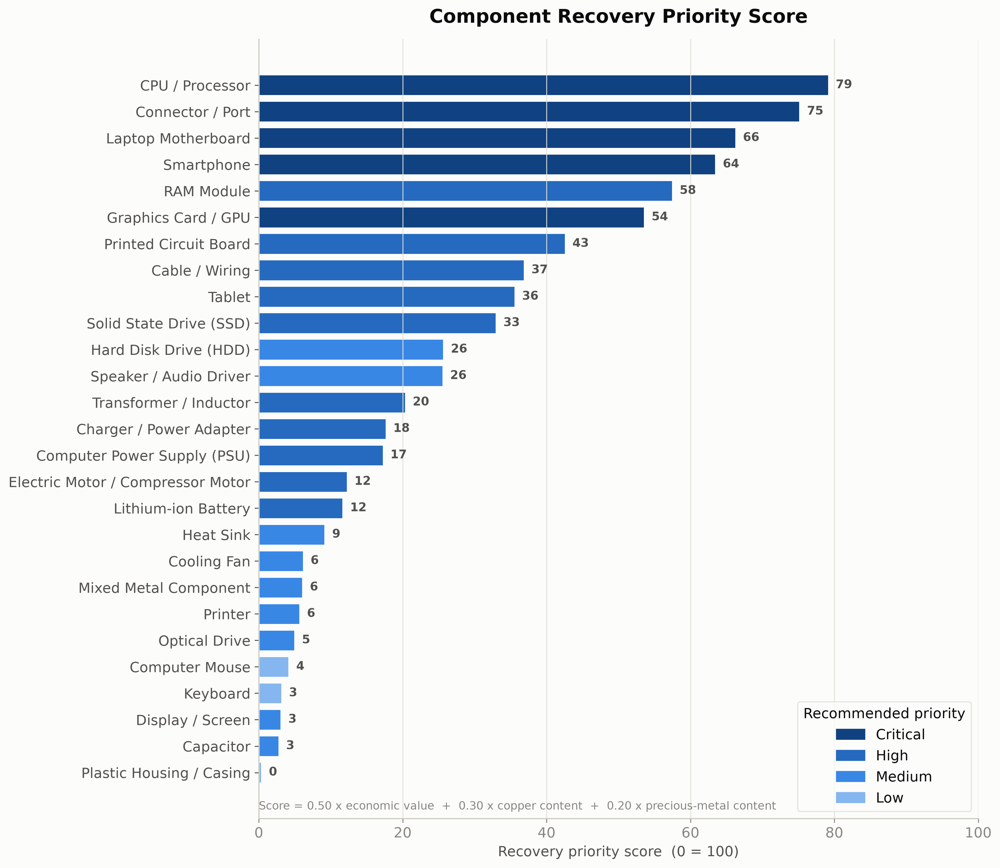
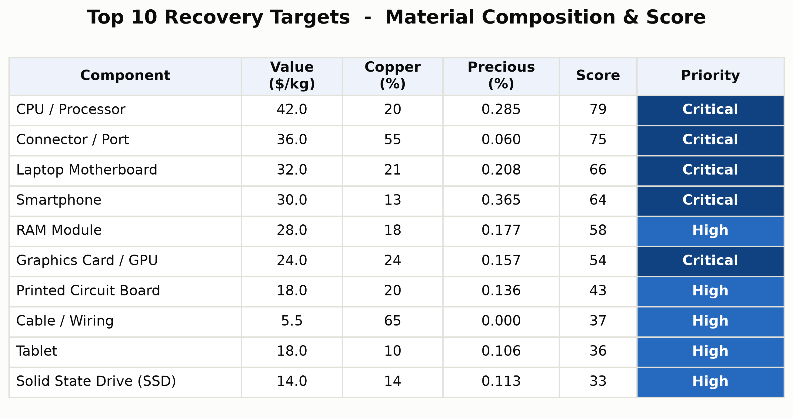
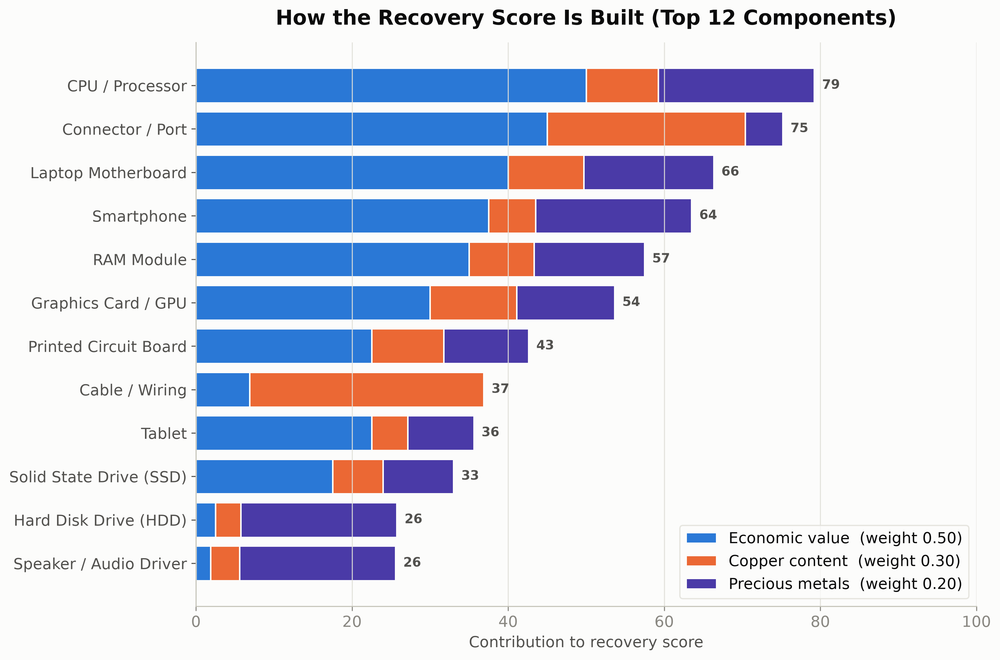
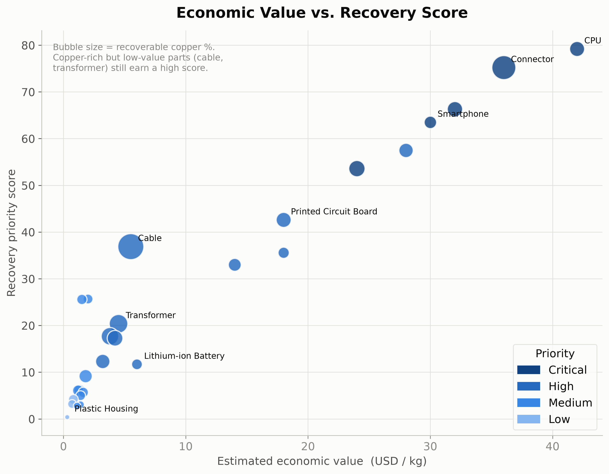
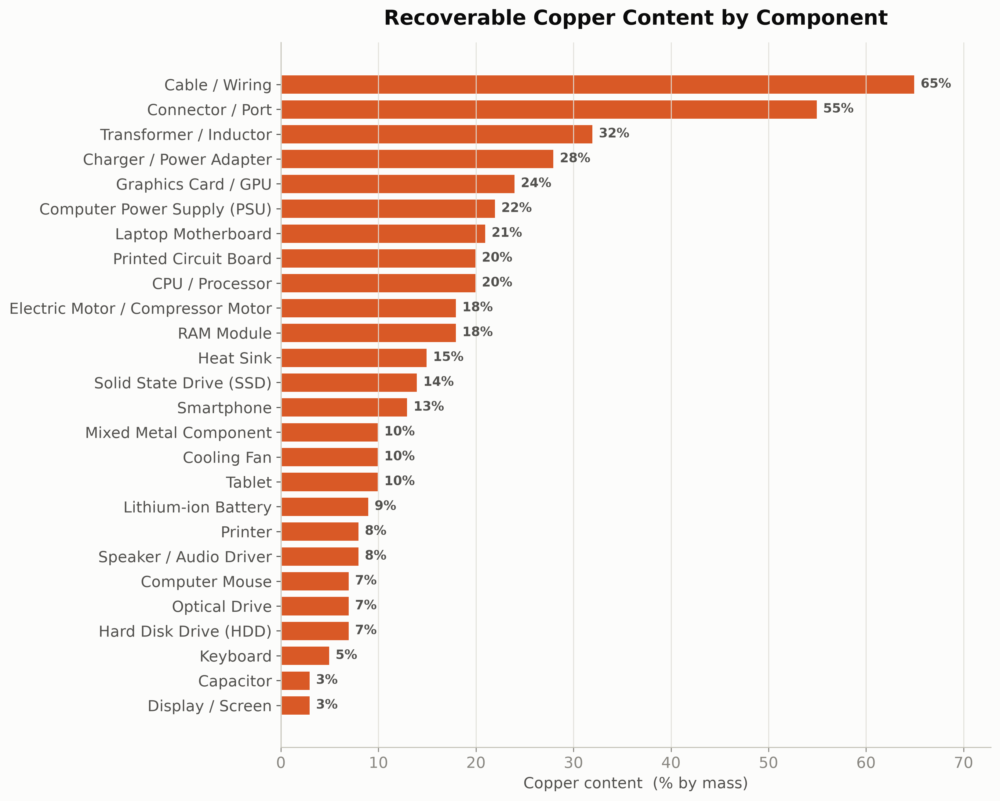
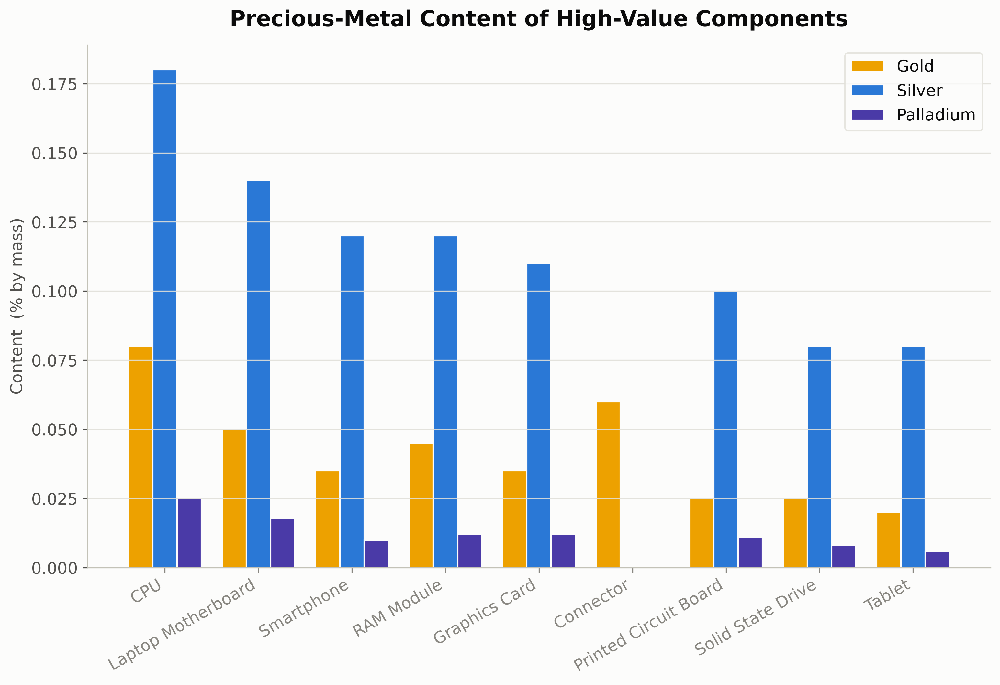

Research Question
Can a computer-vision system identify e-waste components and prioritize them for material recovery using an interpretable scoring model?
Introduction
- E-waste contains recoverable copper, gold, silver, palladium, lithium, cobalt, nickel, and rare-earth materials.
- Traditional classification answers "what is this?" but not "which component should be recovered first?"
- This project links visual recognition to material-recovery decisions.
Methods
- MobileNetV2 transfer-learning classifier trained on 23,960 labeled images across 18 classes.
- 80/20 train-validation split, 10 epochs.
- Class-balancing augmentation expanded the working dataset to 27,380 images.
- Material database stores value, copper, precious metals, and priority for 27 components.
score = 0.50*value + 0.30*copper + 0.20*precious



Results




Main Finding
The project turns component recognition into recovery decision support by ranking detected e-waste according to estimated value, copper content, and precious-metal content.
Material Insights


Discussion
- Contribution: an interpretable bridge from computer vision to recovery prioritization.
- Transparent scoring makes the recommendation auditable.
- Limitation: custom YOLO detector is not fully trained yet; final detection mAP is future work.
- Material composition estimates rely on published literature values rather than direct spectroscopic measurement.
Conclusion and Future Work
- AI can identify e-waste components and rank them for recovery.
- Next: label bounding boxes, train YOLO, evaluate precision/recall/mAP and latency.
- Deploy the real-time Arducam dashboard and validate material estimates experimentally.